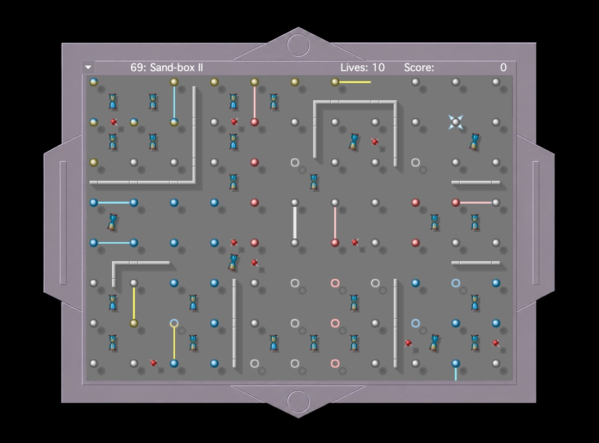

Find your rhythm.
Swing, bounce, and flip. Three simple moves open up a surprising number of possibilities.
One wand. One grid. A perfectly timed move. Spin Doctor brings the wonderfully tricky Macintosh game to your Mac, rebuilt in Swift.
macOS · Apple Silicon & Intel

01 / The idea
Your white wand never stops turning. Switch pivots at just the right moment, work your way past obstacles, and reach the rotating goal dot.
Swing, bounce, and flip. Three simple moves open up a surprising number of possibilities.
Rings, doors, portals, and burning fuses turn every grid into a different little puzzle.
Collect bonuses, beat your personal bests, and work your way through all 106 levels.
02 / Screenshots
Original game artwork, a new frame, and levels carefully reconstructed from the original game data.
All screenshots show the native Swift port.
03 / The challenge
Learn the route, then race the clock. The four original difficulty settings change the pace and how time contributes to your score.
Pre-Med: no time limit. Find your rhythm and learn the grid at your own pace.
04 / The controls
The wand turns by itself. You decide when to change its pivot.
Prefer a controller? The Mac app supports configurable PlayStation, Xbox, and generic gamepads.
05 / The project
Spin Doctor is being rebuilt for today’s Macs from the original 68k/PowerPC game. Original level data, artwork, programs, and reference recordings form the foundation of the Swift port.
The goal is to preserve the feel of the original. All 106 levels and their goals are implemented, with timing, rendering, and audio still being checked against the classic game.
.spindoctor filesClone the repository, open it in Xcode, select the “Spin Doctor” scheme, and press ⌘ R. Select your own signing team if needed.
git clone https://github.com/ProfDrLuigi/SpinDoctor.git
open "SpinDoctor/Spin Doctor.xcodeproj"A few things worth knowing.
.spindoctor format. Load a file using “Open…” and press P to resume. Saved games from the classic Macintosh version cannot be imported.Your next move